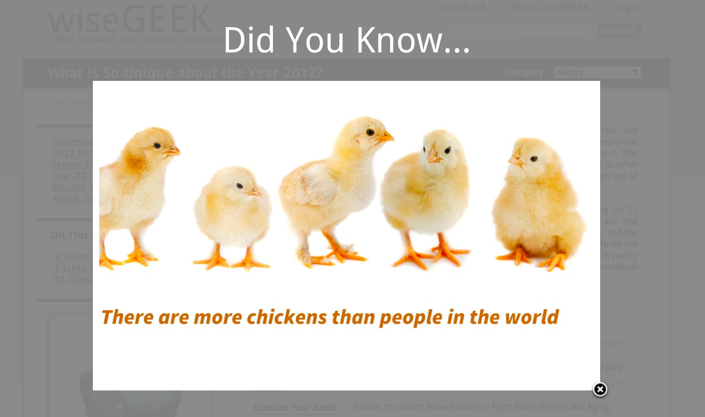

EXAMPLE 1
Jeremy LeuLast updated December 2, 2012
An example of a website that lacks credibility is Wisegeek.com. The website claims to offer "clear answers for common questions," such as their article "What is so unique about the year 2012?". While the website does not appear to have been published with any malicious intent, a variety of reasons point to its ultimate lack of credibility.
The most obvious sign of problems with the article's authority is a very obtrusive advertisement that occupies the entirety of the page as soon as the webpage is loaded. The presence of such an advertisement suggests that the website was created to generate revenue from advertising, and is more concerned with making a profit than providing reliable and credible information to the general public. Additionally, the article makes no mention of the author of the article; as such, the origins of the article are questionable, as the credentials of the author cannot be researched without the name explicitly written.
No date is visible on the article, hurting the article's credibility because the audience is unable to tell whether the article's information is up to date. The publisher written at the bottom of the page is a corporation that seeks to monetize its websites, further pointing out the commercial motives of the publishing of the site. The publisher also makes no claim to take responsibility for the reliability of the articles on the website.